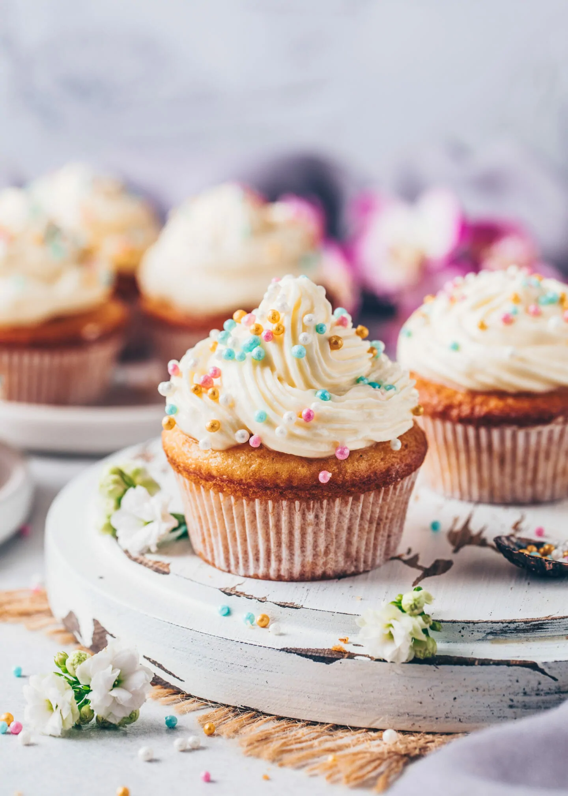

Classic Vegan Cupcakes

Image Credit: https://biancazapatka.com
Moist, fluffy, and totally dairy-free, these vegan cupcakes are a delicious and simple treat for any occasion. Perfect for plant-based eaters and anyone who loves a good cupcake!
Prep Time: 15 min
Bake Time: 20 min
Total Time: 35 min
Yields: 12 cupcakes
For the Cupcakes
- 1 ¼ cups all-purpose flour
- ¾ cup organic cane sugar
- ¼ teaspoon baking soda
- 1 ¼ teaspoons baking powder
- ¼ teaspoon salt
- ½ cup coconut oil or vegan butter, melted
- 1 tablespoon apple cider vinegar
- 2 teaspoons pure vanilla extract
- ½ cup unsweetened almond milk (or any plant milk)
- ¼ cup unsweetened applesauce
- Optional: ¼ cup vegan chocolate chips or chopped nuts
For the Vegan Frosting
- 1 cup vegan butter, softened
- 3 cups powdered sugar, sifted
- 2 tablespoons plant-based milk
- 2 teaspoons pure vanilla extract
- Pinch of salt
- Food coloring (optional)
- Vegan sprinkles for topping (optional)
Instructions
- Preheat your oven to 350°F. Line a 12-cup muffin tin with cupcake liners.
- In a medium bowl, whisk together flour, baking powder, baking soda, and salt.
- In a large bowl, mix the melted coconut oil (or vegan butter) and sugar until combined.
- Stir in the applesauce, vanilla extract, and apple cider vinegar.
- Alternate adding the dry ingredients and almond milk, beginning and ending with the dry mix. Stir until just combined.
- Gently fold in vegan chocolate chips or nuts if using.
- Divide the batter evenly among the liners (about ¾ full). Bake for 20 minutes, or until a toothpick inserted in the center comes out clean.
- Let cupcakes cool in the pan for 5 minutes, then transfer to a wire rack to cool completely before frosting.
Make the Frosting
- Beat vegan butter on medium-high speed until creamy.
- Gradually add powdered sugar (1 cup at a time), mixing on low until combined.
- Add vanilla, salt, and plant milk 1 tablespoon at a time, beating until fluffy.
- Optional: divide into bowls and tint with food coloring for colorful frosting.
- Pipe or spread onto cooled cupcakes and top with vegan sprinkles.
Helpful Tips!
- Use room-temperature ingredients for a smoother batter and better texture.
- Don't overmix, stir until ingredients are just combined for fluffier cupcakes.
- To enhance flavor, try adding a pinch of cinnamon or lemon zest to the batter.
- Let cupcakes cool completely before frosting to avoid melting.
- Store frosted cupcakes in an airtight container at room temperature for up to 2 days or in the fridge for up to 5 days.
- Bring chilled cupcakes to room temperature before serving for the best flavor and softness.